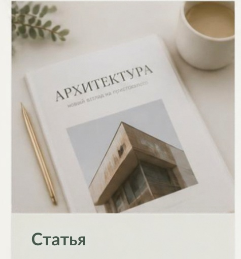
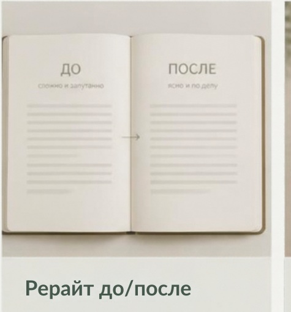
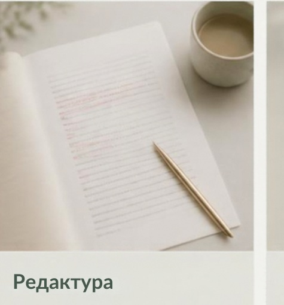
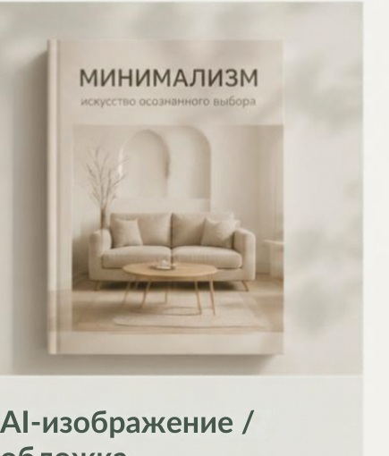

Статья
демонстрационный пример
до замены реальной работой
Использую нейросети для скорости и идей
Отбираю лучшее и проверяю факты
Дорабатываю стиль и структуру вручную
Результат — точный, понятный, живой контент
ИИ-статьи с ручной редактурой
Рерайт и доработка текстов
Редактура и вычитка
Генерация изображений и обложек
Понимаю задачу, уточняю цели и собираю исходные данные.
Использую нейросети, чтобы быстро наметить варианты и текст.
Редактирую, выверяю факты, усиливаю текст и визуал.
Готовый контент, который решает вашу задачу.
демонстрационные примеры для знакомства с подходом и
уровнем качества

демонстрационный пример
до замены реальной работой

демонстрационный пример
до замены реальной работой

демонстрационный пример
до замены реальной работой

демонстрационный пример
до замены реальной работой
Напишите — и я предложу лучшее решение.